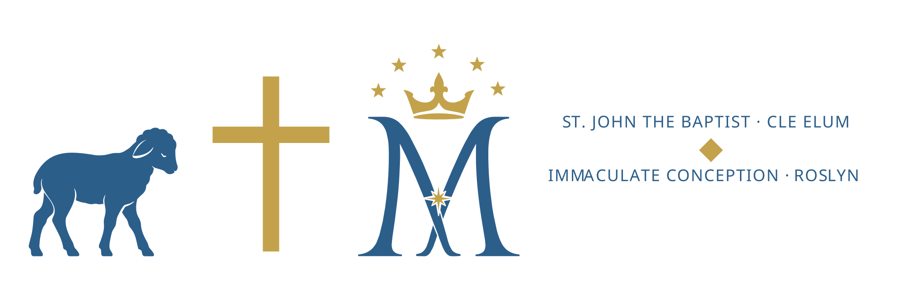

“Her many sins have been forgiven; hence, she has shown great love.”
Luke 7:47
From Fr. Francisco
Friends, this Sunday’s Gospel finds Jesus at dinner in the home of a Pharisee, where an uninvited woman weeps at his feet. The room is quick to judge her. Jesus is not. He sees her love, and he names it out loud.
It is easy, in a small town, to know each other’s histories — who stumbled, who drifted, who came back. The Lord asks us to see one another the way he saw that woman: not by the worst day, but by the love that brings us through the door of the church at all.
This week, when you pass the peace at Mass, look the person in the eye. You may be looking at someone the rest of the world wrote off, whom God has forgiven and set free.
Who is the one person this week I find hardest to forgive — and what would it cost me to begin?
This Week
Join us for Coffee & Donuts after the 10 a.m. Mass this Sunday at St. John the Baptist — bring a neighbor.